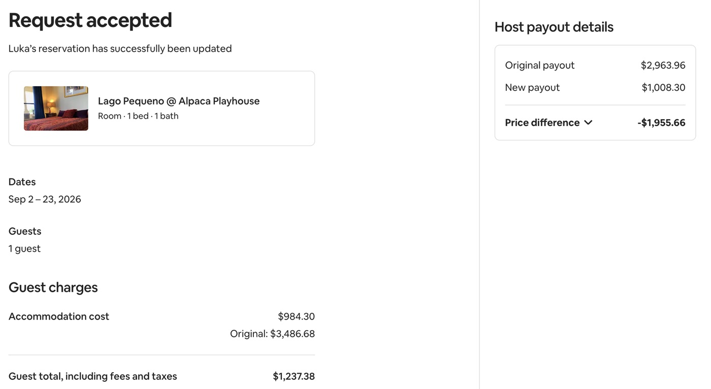
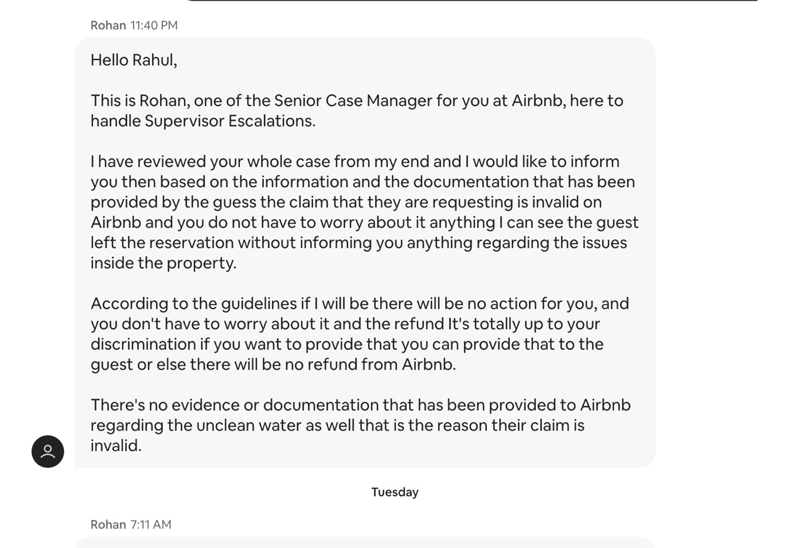
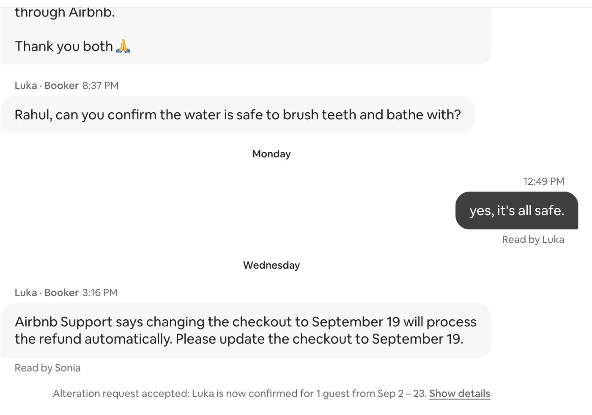
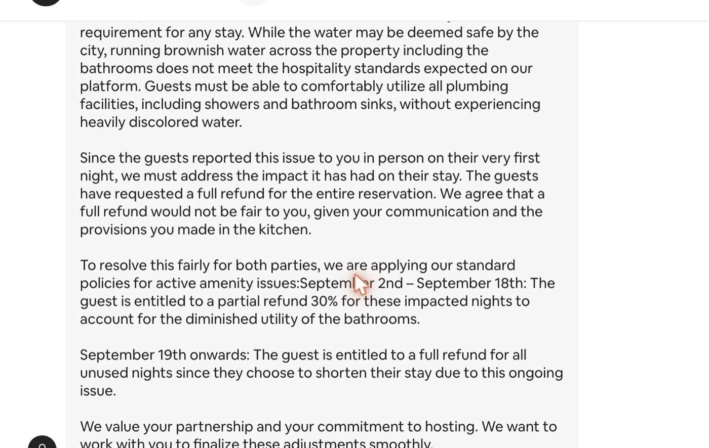

I've hosted on Airbnb for 5 years. This page is the complete record of how Airbnb support handled one guest's early departure: the full message thread, the payout records, and what support told me on the phone. Four of the five Airbnb staff on this case got it wrong. When 80% of the people get it wrong, it isn't a mistake. It's the system.
A guest booked 3 months (Sep 2 – Nov 30) and stayed 17 days. Around Sep 17, the local water utility flushed its lines and the water was discolored for about 3 days. The utility's published guidance says this is sediment, it's temporary, and running the cold tap clears it. There was no boil-water notice. The property has a 6-stage filtration system for drinking water and 3 other filters.
On Sep 19 the guest messaged: "I'm leaving today. Monday's payment won't go through. I've requested the unused portion through Airbnb." Six and a half hours later, he asked for the first time whether the water was safe. It was. I live about 10 feet from the unit, and the day before he'd told me everything was great.
| Sun Sep 20 | Agent 1 | Says the guest reported the issue "in person on their very first night" (false). Cites "documentation supporting the legitimacy" of the report. Gives me 1 hour to respond. Rules 30% back on every night from Sep 2, two weeks before the discoloration began, plus a full refund of every remaining night. |
| Mon Sep 21 | Agent 1 | Backs off the first two weeks, but still cancels my payout for Sep 20 onward because of "the lack of a proper resolution from your end." Nobody ever asked me to resolve anything. |
| Mon Sep 21 | Agent 2 | "The guest is eligible for a partial refund and a full refund." No answers to my questions. |
| Mon Sep 21 | Agent 3 | Misquotes the Rebooking & Refund Policy as "host or Airbnb." (The policy requires the guest to contact the host first.) Asserts a "clean, clear water" standard that isn't in Airbnb's published policies. Makes escalation conditional. |
| Mon Sep 21 | Senior Case Manager | Reviews the full case. The claim is invalid, there's "no evidence or documentation," "no action for you," and the refund is "totally up to your discretion." |
| Tue Sep 22 | Case Manager 2 | Asks whether I'll refund "the unspent night" (it was about 70 nights). |
| Wed Sep 23, 3:16 PM | Airbnb Support | The guest writes: "Airbnb Support says changing the checkout to September 19 will process the refund automatically." |
| Wed Sep 23, 4:07 PM | Airbnb | "Your reservation with Luka has been updated." The date change goes through. I never accepted it, and I hadn't yet answered the case manager's refund question. My payout drops from $2,963.96 to $1,008.30. |
| Wed Sep 23, 9:25 PM | Me | Answer the refund question: "Not at this time." Repeat my unanswered questions. |
| Thu Sep 24 | Nobody | "Can someone answer me?" No reply. The case manager is on a week off. |
| Fri Sep 25 | Phone rep | Confirms the change was unauthorized. Can't give a timeframe, can't escalate, can't prioritize. |
Failures 2 and 3 are operational problems, and any company can fix those. Failure 1 is a choice.
From my call with Airbnb support on Sep 25, after the rep confirmed the date change had been made without my approval. Quotes are from an automatic transcript of the call, lightly cleaned up.
Me:When will somebody get back to me?
Rep:"It's in the queue right now."
Me:What's the longest it could take? Could it take one month? One week?
Rep:"So, it could take a month. I'm not sure about that."
Rep:"It'll be assigned very soon."
Me:What does very soon mean?
Rep:"Very soon, sir."
Rep:"They will get to your case eventually."
Rep:The case manager was "on their week off, therefore nobody was responding."
Rep:"Last week was totally fine. This week we did have a high call volume."
Rep:"It might seem that way. I totally understand it."
Rep:"Intention comes with willingness, right?"
Rep:"I'm requesting your patience in this meantime."
Rep, on the case note he added:"They can prioritize your case once your case got assigned to the senior guest manager."
After about three minutes of searching, the answer was airbnb.com/help, the general help center.
Rep:"We do have a spreadsheet where we check what are the links for each query. So, for the feedback, it happens to be this."
Rep:"We don't usually hand [it] out … once there is a case."
Rep:"Well, in general, I will rate very high."
Me:On this issue?
Rep:"Not in this issue."
Rep:"Hopefully, this is a good result for you."
Rep:"We'll take the feedback and we'll hopefully improve from there."




What I'm asking for: my $2k back, written answers to my questions, and one named person who owns this case until it's resolved.
The complete Airbnb Support message thread, word for word. Times are as shown in my Airbnb inbox (US Central). The guest's surname and the reservation code are redacted. wrong marks messages that contradict Airbnb policy or the facts. ruling marks the Senior Case Manager's decision.